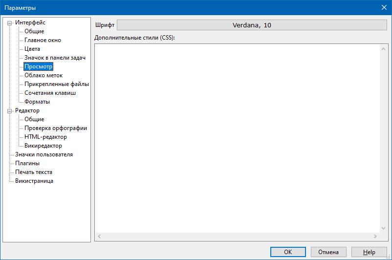

Интерфейс - Просмотр

Данный раздел отвечает за общий внешний вид HTML-страниц и викистраниц в режиме просмотра. Здесь можно задать размер и начертание шрифта (группа параметров Шрифт), который будет использоваться на странице по умолчанию, а также добавить CSS-стили, которые будут вставлены во все страницы указанных типов типа.
В поле ввода Дополнительные стили (CSS) можно ввести дополнительные стили CSS, которые будут добавлены к каждой странице (если тип страниц поддерживает данный параметр). Этот параметр предназначен для уверенных пользователей программы, которые разбираются в языке CSS и хотят настроить внешний вид страниц под себя, не создавая собственные стили страниц.